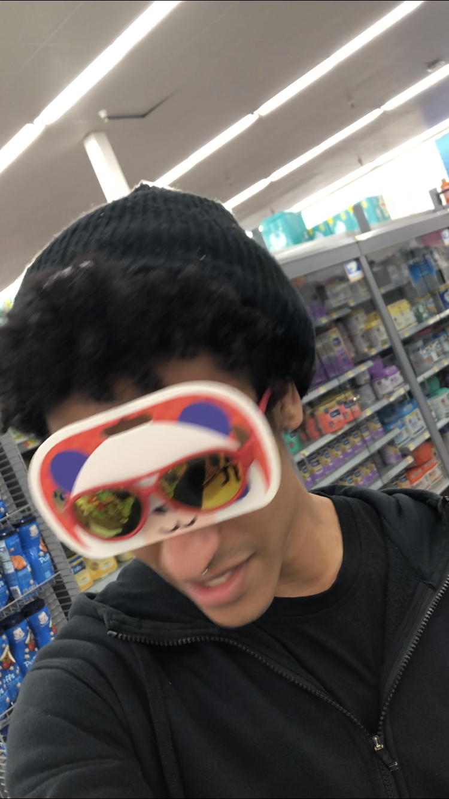

I'm Josh Joyce an actor, artist and developer.
I'm currently enrolled at Rutger's Coding Bootcamp, studying Fullstack webdev.
With intentions of pursuing UXE after graduation.
I like pizza a lot. Ill eat it cold honestly.
Is that weird?
While I may be versitile in fullstack dev, I specialize in front end dev.
Prefer the more artsy side of things... if you couldn't tell.
I'm available for hire so hit me up!!!
